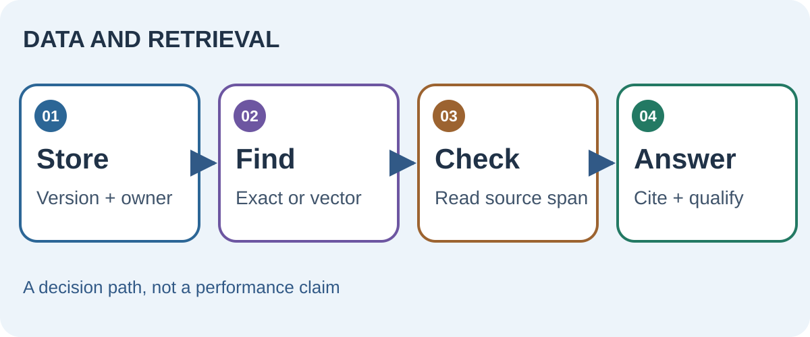

Protect the record before optimizing search
A database is more than a place to put rows. Keys and constraints can prevent impossible states, while transactions keep related changes together. PostgreSQL’s constraint documentation makes this concrete: a policy clause should carry a document ID, version, effective date and owner so a later answer can identify exactly which rule it used. Store the original file or immutable source reference alongside extracted text.
For a question about a current policy, retrieval should filter by effective version and permissions before ranking text. A semantically similar but superseded clause is not evidence for today’s answer.


Choose exact or approximate retrieval deliberately
Use exact lookup for identifiers, dates and strict filters. Use lexical search when the user’s terms matter; vector search helps surface semantically related candidates. Faiss documents exact flat indexes and approximate options including HNSW. Approximate indexes trade some recall for speed or memory. They can narrow candidates, but a close vector is not proof that a passage answers the question.
“What is the approval threshold for overseas travel?” first filters the current travel-policy version. Search returns two candidate clauses. The system quotes the relevant span, checks its effective date and cites the policy section; if versions conflict, it asks for review.
Evaluate the path to an answer
Measure retrieval recall on questions with known source spans, then evaluate whether the answer is supported by those spans. Keep query, retrieved IDs, rank, source versions and final citation in an inspectable trace. This lets you tell a retrieval miss from a reasoning error. The same design supports corrections when a document is replaced or access is revoked.
Read the original sources
- PostgreSQL constraintsPrimary documentation on keys and integrity rules.
- Faiss index catalogueExact and approximate index mechanisms, including HNSW.